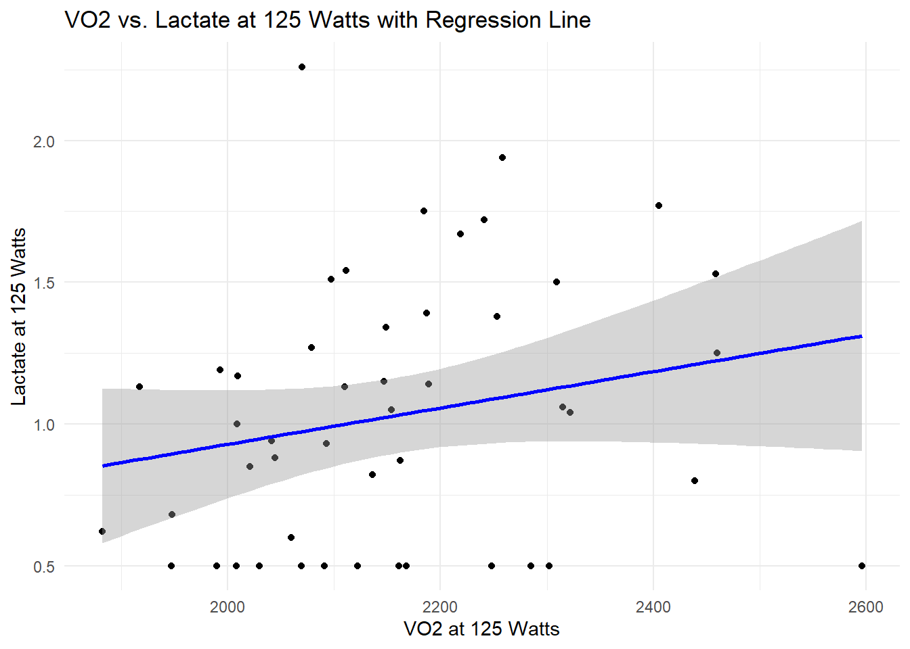
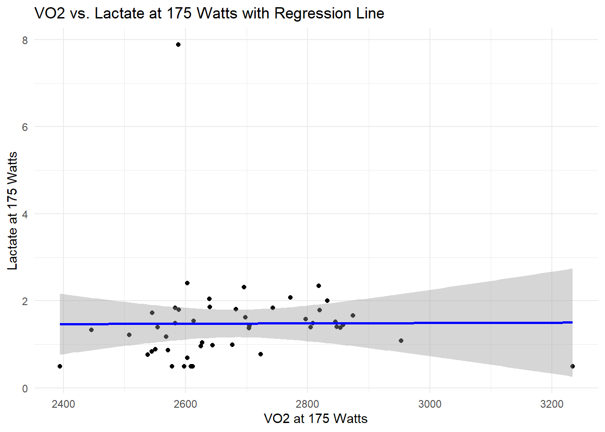
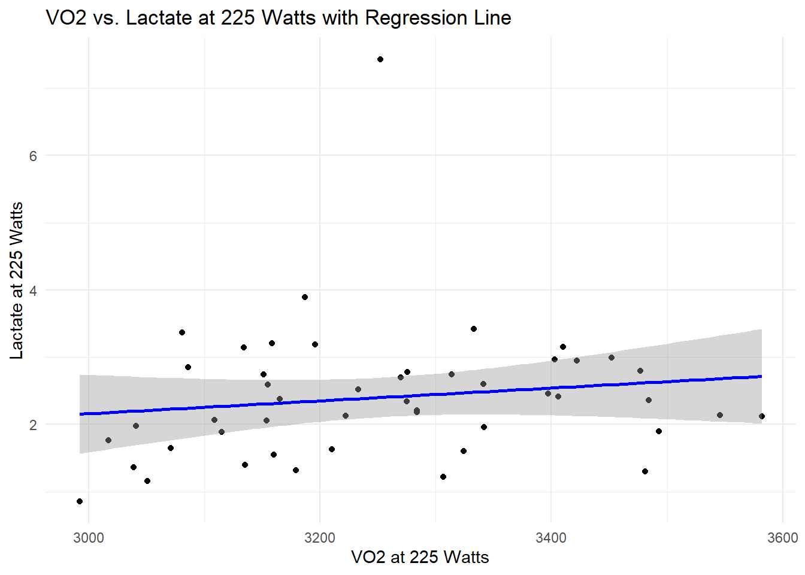
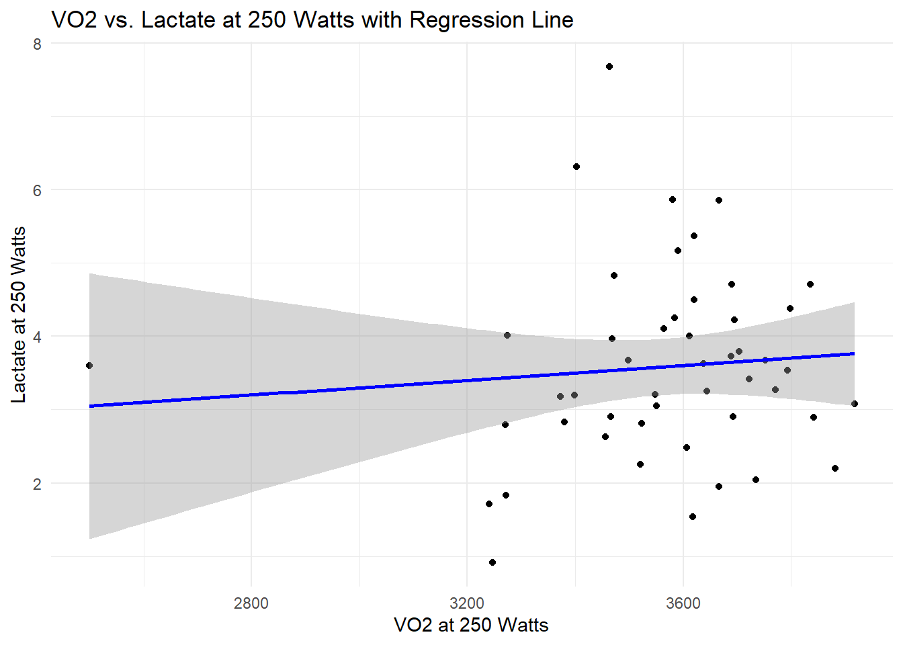
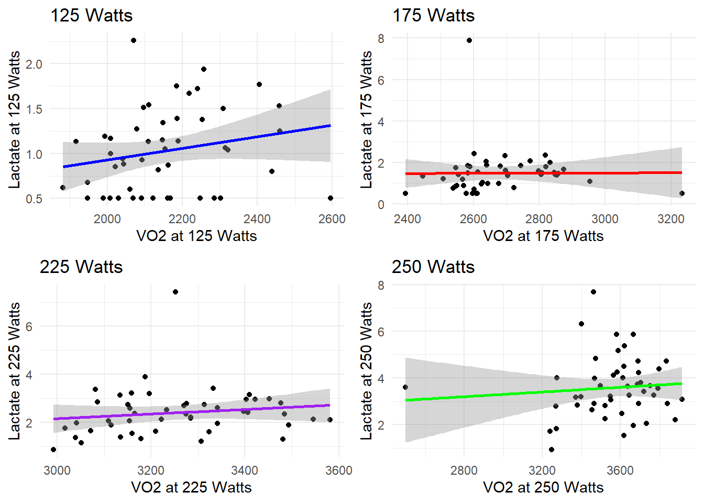
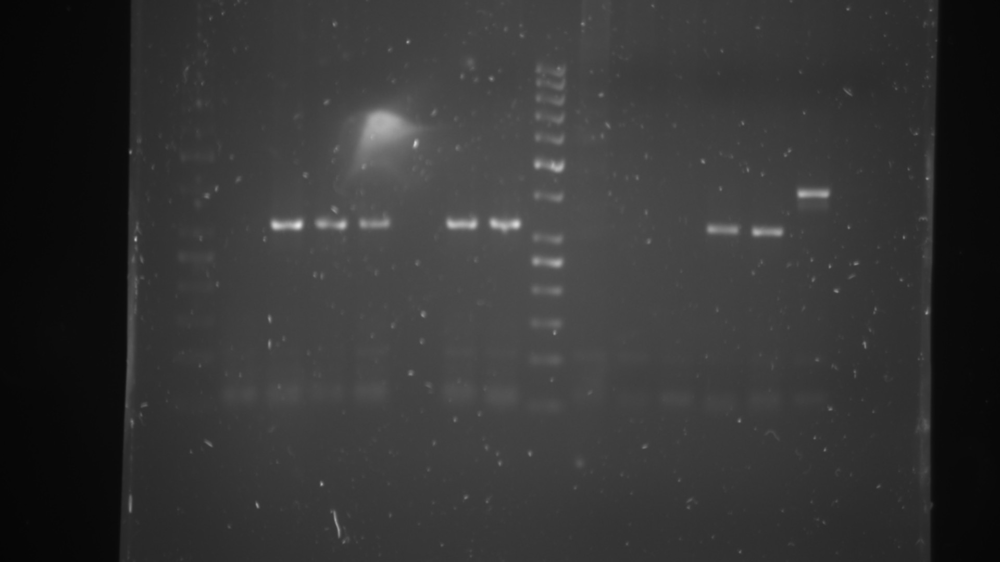
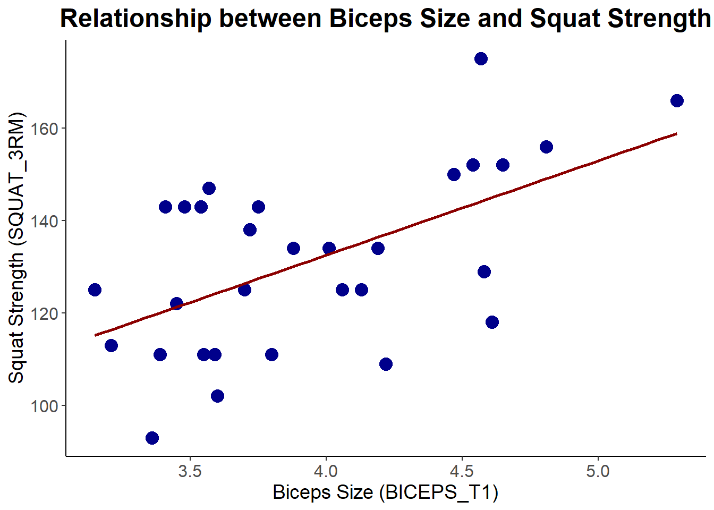

Vis/skjul kode
library(exscidata)
library(ggplot2)
library(dplyr)
library(broom)I denne delen skal vi utforske hvordan man kan fange den fysiologiske essensen av melkesyreterskeltesten. En vanlig metode for å analysere forholdet mellom treningsintensitet og blodmelkesyre er å bestemme intensiteten ved faste blodmelkesyrenivåer. Dette kan oppnås ved å bruke en regresjonsmodell for å beskrive forholdet, og deretter utføre en “invers prediksjon” av treningsintensiteten.
library(exscidata)
library(ggplot2)
library(dplyr)
library(broom)# Laster inn datasettet fra excidata
data("cyclingstudy", package = "exscidata") # Erstatt "cyclingdata" med den riktige dataen.## Filtrering av data
cyclingstudy_filtered <- cyclingstudy %>%
select(VO2.125, lac.125, VO2.175, lac.175, VO2.225, lac.225, VO2.250, lac.250) %>%
na.omit() # Fjern rader med NA-verdierVO2.225og blodmelkesyre lac.225model <- lm(lac.225 ~ VO2.225, data = cyclingstudy_filtered)
summary(model)
Call:
lm(formula = lac.225 ~ VO2.225, data = cyclingstudy_filtered)
Residuals:
Min 1Q Median 3Q Max
-1.3212 -0.5845 -0.1681 0.3879 5.0272
Coefficients:
Estimate Std. Error t value Pr(>|t|)
(Intercept) -0.6984886 3.1524262 -0.222 0.826
VO2.225 0.0009537 0.0009677 0.985 0.330
Residual standard error: 1.01 on 46 degrees of freedom
Multiple R-squared: 0.02068, Adjusted R-squared: -0.0006144
F-statistic: 0.9711 on 1 and 46 DF, p-value: 0.3296## Last inn dplyr-pakken
library(dplyr)
## Velg relevante kolonner og fjerne rader med NA-verdier
cyclingstudy_filtered <- cyclingstudy %>%
select(VO2.125, lac.125, VO2.175, lac.175, VO2.225, lac.225, VO2.250, lac.250) %>%
na.omit() # Fjern rader med NA-verdier
# Lager en lineær modell
model <- lm(lac.225 ~ VO2.225, data = cyclingstudy_filtered)
# Se oppsummeringen av modellen
summary(model)
Call:
lm(formula = lac.225 ~ VO2.225, data = cyclingstudy_filtered)
Residuals:
Min 1Q Median 3Q Max
-1.3212 -0.5845 -0.1681 0.3879 5.0272
Coefficients:
Estimate Std. Error t value Pr(>|t|)
(Intercept) -0.6984886 3.1524262 -0.222 0.826
VO2.225 0.0009537 0.0009677 0.985 0.330
Residual standard error: 1.01 on 46 degrees of freedom
Multiple R-squared: 0.02068, Adjusted R-squared: -0.0006144
F-statistic: 0.9711 on 1 and 46 DF, p-value: 0.3296library(ggplot2)
## Scatterplot med regresjonslinje for VO2.125 og lac.125
ggplot(cyclingstudy_filtered, aes(x = VO2.125, y = lac.125)) +
geom_point() +
geom_smooth(method = "lm", color = "blue") +
labs(title = "VO2 vs. Lactate at 125 Watts with Regression Line",
x = "VO2 at 125 Watts",
y = "Lactate at 125 Watts") +
theme_minimal()
## Scatterplot med regresjonslinje for VO2.175 og lac.175
ggplot(cyclingstudy_filtered, aes(x = VO2.175, y = lac.175)) +
geom_point() +
geom_smooth(method = "lm", color = "blue") +
labs(title = "VO2 vs. Lactate at 175 Watts with Regression Line",
x = "VO2 at 175 Watts",
y = "Lactate at 175 Watts") +
theme_minimal()
## Scatterplot med regresjonslinje for VO2.225 og lac.225
ggplot(cyclingstudy_filtered, aes(x = VO2.225, y = lac.225)) +
geom_point() +
geom_smooth(method = "lm", color = "blue") +
labs(title = "VO2 vs. Lactate at 225 Watts with Regression Line",
x = "VO2 at 225 Watts",
y = "Lactate at 225 Watts") +
theme_minimal()
## Scatterplot med regresjonslinje for VO2.250 og lac.250
ggplot(cyclingstudy_filtered, aes(x = VO2.250, y = lac.250)) +
geom_point() +
geom_smooth(method = "lm", color = "blue") +
labs(title = "VO2 vs. Lactate at 250 Watts with Regression Line",
x = "VO2 at 250 Watts",
y = "Lactate at 250 Watts") +
theme_minimal()
# Laster inn pakker
library(dplyr)
library(ggplot2)
## Filtrer dataene
cyclingstudy_filtered <- cyclingstudy %>%
select(VO2.125, lac.125, VO2.175, lac.175, VO2.225, lac.225, VO2.250, lac.250) %>%
na.omit() # Fjern rader med NA-verdier
## Lager regresjonsmodeller for hvert sett av data
model_125 <- lm(lac.125 ~ VO2.125, data = cyclingstudy_filtered)
model_175 <- lm(lac.175 ~ VO2.175, data = cyclingstudy_filtered)
model_225 <- lm(lac.225 ~ VO2.225, data = cyclingstudy_filtered)
model_250 <- lm(lac.250 ~ VO2.250, data = cyclingstudy_filtered)
# Gir eksempel på invers prediksjon
predict_intensity <- function(lactate_value, model) {
intercept <- coef(model)[1]
slope <- coef(model)[2]
(lactate_value - intercept) / slope
}
## Beregner intensitet ved 2 og 4 mmol/L for en valgt modell (model_225)
intensity_at_2mmol <- predict_intensity(2, model_225)
intensity_at_4mmol <- predict_intensity(4, model_225)
# Skriv ut resultatene
intensity_at_2mmol(Intercept)
2829.616 intensity_at_4mmol(Intercept)
4926.802 ## Plotting
# Scatterplot med regresjonslinje for VO2.125 og lac.125
ggplot(cyclingstudy_filtered, aes(x = VO2.125, y = lac.125)) +
geom_point() +
geom_smooth(method = "lm", color = "blue") +
labs(title = "VO2 vs. Lactate at 125 Watts with Regression Line",
x = "VO2 at 125 Watts",
y = "Lactate at 125 Watts") +
theme_minimal()## laster inn nødvendige pakker
library(gridExtra)
## Scatterplot for VO2.125 og lac.125
plot_125 <- ggplot(cyclingstudy_filtered, aes(x = VO2.125, y = lac.125)) +
geom_point() +
geom_smooth(method = "lm", color = "blue") +
labs(title = "125 Watts",
x = "VO2 at 125 Watts",
y = "Lactate at 125 Watts") +
theme_minimal()
## Scatterplot for VO2.175 og lac.175
plot_175 <- ggplot(cyclingstudy_filtered, aes(x = VO2.175, y = lac.175)) +
geom_point() +
geom_smooth(method = "lm", color = "red") +
labs(title = "175 Watts",
x = "VO2 at 175 Watts",
y = "Lactate at 175 Watts") +
theme_minimal()
##Scatterplot for VO2.225 og lac.225
plot_225 <- ggplot(cyclingstudy_filtered, aes(x = VO2.225, y = lac.225)) +
geom_point() +
geom_smooth(method = "lm", color = "purple") +
labs(title = "225 Watts",
x = "VO2 at 225 Watts",
y = "Lactate at 225 Watts") +
theme_minimal()
##Scatterplot for VO2.250 og lac.250
plot_250 <- ggplot(cyclingstudy_filtered, aes(x = VO2.250, y = lac.250)) +
geom_point() +
geom_smooth(method = "lm", color = "green") +
labs(title = "250 Watts",
x = "VO2 at 250 Watts",
y = "Lactate at 250 Watts") +
theme_minimal()
## Kombinerer plottene
grid.arrange(plot_125, plot_175, plot_225, plot_250, ncol = 2)
predict_intensity <- function(lactate_value, model) {
intercept <- coef(model)[1]
slope <- coef(model)[2]
(lactate_value - intercept) / slope
}
# Beregn intensitet ved 2 og 4 mmol/L
intensity_at_2mmol <- predict_intensity(2, model)
intensity_at_4mmol <- predict_intensity(4, model)
intensity_at_2mmol(Intercept)
2829.616 intensity_at_4mmol(Intercept)
4926.802 # Beregn residualstandardavvik
residuals <- residuals(model)
mean_residual <- mean(residuals)
sd_residual <- sd(residuals)
typical_error_percentage <- (sd_residual / abs(mean_residual)) * 100
typical_error_percentage[1] 7.198079e+18Det er et ekstremt høyt resultat for typisk feilprosent, noe som tyder på at det kan være et problem med beregningene.
1.Høy Residualstandardavvik: Hvis residualstandardavviket er ekstremt høyt, kan det tyde på at modellen ikke passer dataene godt.
2.Gjennomsnittlig Residual: Hvis gjennomsnittlig residual gåt mot null, kan det føre til en enorm prosentverdi når du deler residualstandardavviket på gjennomsnittlig residual.
3.Feil i Beregningene: En feil i beregningen kan også føre til et usannsynlig resultat.
Hvis R² er veldig lav, betyr det at modellen ikke forklarer variansen i dataene godt.
Call:
lm(formula = lac.225 ~ VO2.225, data = cyclingstudy_filtered)
Residuals:
Min 1Q Median 3Q Max
-1.3212 -0.5845 -0.1681 0.3879 5.0272
Coefficients:
Estimate Std. Error t value Pr(>|t|)
(Intercept) -0.6984886 3.1524262 -0.222 0.826
VO2.225 0.0009537 0.0009677 0.985 0.330
Residual standard error: 1.01 on 46 degrees of freedom
Multiple R-squared: 0.02068, Adjusted R-squared: -0.0006144
F-statistic: 0.9711 on 1 and 46 DF, p-value: 0.3296Regresjonsanalysen for laktatnivået ved 225 watt mot VO2 ved 225 watt viser følgende resultater:
Koeffisienter: Intercept og VO2.225 er ikke signifikante, noe som antyder at VO2.225 ikke har en signifikant lineær effekt på laktatnivået.
Residualstandardavvik: Standardavviket til residualene er 1.01, som gir en indikasjon på spredningen av de estimerte verdiene rundt de faktiske verdiene.
R²: Modellen forklarer kun 2.07% av variansen i laktatnivået ved 225 watt, noe som er svært lavt og indikerer at modellen ikke passer dataene godt.
F-statistik: Med en p-verdi på 0.3296, er det ingen signifikant lineær sammenheng mellom VO2.225 og laktatnivået.
Disse resultatene indikerer at VO2.225 ikke er en god prediktor for laktatnivået ved 225 watt. Det bør vurderes andre modeller eller variabler for å forbedre forklaringen av laktatnivået, eller å utforske alternative statistiske metoder for en mer presis analyse.
I molekylærbiologiske laboratorier er analyse av DNA og RNA essensielt for mange eksperimenter. I denne delen av oppgaven skal vi fokusere på to sentrale aspekter: forutsigelse av størrelsen på PCR-amplifiserte DNA-fragmenter og beregning av helling på en qPCR kalibreringskurve.
knitr::include_graphics("bilde_DNA.jpg")
Målet er å analysere DNA-fragmenter eller qPCR-resultater for å bestemme størrelse eller effektivitet. For DNA-fragmenter vil du bruke verktøy som Image J og R for å forutsi størrelsen på fragmentene.
Metodebeskrivelse:
Målte migrasjonsavstanden fra gelen ved hjelp av ImageJ. Har brukt en kjent DNA-ladder til å lage en standardkurve i R, ved å relatere migrasjonsavstanden til størrelsen på fragmentene i basepar.
distance_in_pixel <- 363.1116
ladder_distance_in_pixel <- 669.0605
known_ladder_distance <- 6.97 # inches
## Konvertering fra piksler til inches
actual_distance <- (distance_in_pixel / ladder_distance_in_pixel) * known_ladder_distance
actual_distance[1] 3.782749# DNA-ladder data (størrelse i bp og migrasjonsavstand i inches)
ladder_data <- data.frame(
size_bp = c(1000, 800, 600, 400, 200),
distance_inch = c(1.0, 1.5, 2.0, 2.5, 3.0)
)
# Log-transformasjon av DNA-størrelser (vanlig teknikk for DNA-størrelser)
ladder_data$log_size_bp <- log10(ladder_data$size_bp)
# Lineær modell (forhold mellom log(bp) og avstand i inches)
model <- lm(log_size_bp ~ distance_inch, data = ladder_data)
# Prediker størrelsen for fragmentet med migrasjonsavstand på 3.782749 inches
predicted_log_size <- predict(model, newdata = data.frame(distance_inch = 3.782749))
# Konverter tilbake til basepar (bp)
predicted_size_bp <- 10^predicted_log_size
predicted_size_bp 1
129.1513 Den beregnede migrasjonsavstanden for det ukjente fragment var 3.782749 inches.
Basert på standardkurven, ble størrelsen på dette fragmentet beregnet til 129 bp.
Fragmentet med en migrasjonsavstand på 3.782749 inches i gelen representerer et DNA-fragment med en størrelse på omtrent 129 basepar.129 basepar (bp) refererer til lengden på DNA-fragmentet i forhold til antall baser det består av. DNA er bygd opp av en sekvens av nukleotider som kan deles inn i fire typer baser: adenin (A), tymin (T), cytosin (C), og guanin (G).
Når man sier at et DNA-fragment er 129 basepar langt, betyr det at det består av 129 slike baser. I en DNA-sekvens er disse basene parret opp i en dobbelheliksstruktur (A med T, og C med G). Derfor gir størrelsen i basepar en indikasjon på hvor langt fragmentet er, noe som er nyttig for forskjellige analyser i genetikk, som for eksempel PCR (polymerase chain reaction) eller gelelektroforese.
I denne delen skal vi analysere og tolke en regresjonstabell ved hjelp av hypertrofi-datasettet. Ved å velg en lineær relasjon mellom to variabler i datasettet, som kan være relatert til muskelstørrelse og styrke, to molekylære markører, eller andre relevante variabler.
# Last inn datasettet hypertrophy
data("hypertrophy", package = "exscidata")Bruker en enkel lineær regresjon for å analysere forholdet mellom BICEPS_T1 (uavhengig variabel) og SQUAT_3RM (avhengig variabel)
## Laster inn nødvendig bibliotek
library(dplyr)
# Velger relevante kolonner fra datasettet
data_for_regression <- hypertrophy %>%
select(BICEPS_T1, SQUAT_3RM) %>%
filter(!is.na(BICEPS_T1) & !is.na(SQUAT_3RM))
## Utfør regresjonsanalyse
regression_model <- lm(SQUAT_3RM ~ BICEPS_T1, data = data_for_regression)
# Vis regresjonstabellen
summary(regression_model)
Call:
lm(formula = SQUAT_3RM ~ BICEPS_T1, data = data_for_regression)
Residuals:
Min 1Q Median 3Q Max
-28.000 -11.772 1.012 9.513 30.847
Coefficients:
Estimate Std. Error t value Pr(>|t|)
(Intercept) 50.767 22.189 2.288 0.02989 *
BICEPS_T1 20.434 5.577 3.664 0.00103 **
---
Signif. codes: 0 '***' 0.001 '**' 0.01 '*' 0.05 '.' 0.1 ' ' 1
Residual standard error: 16.31 on 28 degrees of freedom
Multiple R-squared: 0.3241, Adjusted R-squared: 0.3
F-statistic: 13.43 on 1 and 28 DF, p-value: 0.001026Intercept (50.767) Hva det betyr: Når BICEPS_T1 er 0, forventes SQUAT_3RM å være 50.767. Dette er en basisverdi for SQUAT_3RM når biceps-mål er null. Betydning: I praksis kan det hende at en BICEPS_T1 på 0 ikke er realistisk, men interceptet gir oss en referansepunkt i modellen.
Koefisient for BICEPS_T1 (20.434) Hva det betyr: For hver enhet økning i BICEPS_T1, øker SQUAT_3RM med 20.434 enheter. Betydning: Dette indikerer en positiv sammenheng mellom biceps-størrelse og styrke. For eksempel, hvis biceps-mål øker med 1 cm, forventes styrken i knebøy å øke med omtrent 20.434 enheter.
Standardfeil for BICEPS_T1 (5.577) Hva det betyr: Standardfeilen representerer usikkerheten rundt estimatet av koeffisienten for BICEPS_T1. Det er et mål på hvor mye koeffisienten kan variere mellom ulike prøver. Betydning: En standardfeil på 5.577 betyr at koeffisienten kan variere rundt den estimerte verdien.
t-verdi (3.664) Hva det betyr: T-verdien er forholdet mellom koeffisienten og dens standardfeil (20.434 / 5.577). Det gir oss en indikasjon på hvor mange standardfeil koeffisienten er fra null. Betydning: En t-verdi på 3.664 er relativt høy, noe som tyder på at koeffisienten er betydelig forskjellig fra null.
p-verdi (0.00103) Hva det betyr: P-verdien indikerer sannsynligheten for å observere en koeffisient som er så ekstrem som eller mer ekstrem enn den som ble funnet, gitt at nullhypotesen (at koeffisienten er null) er sann. Betydning: En p-verdi på 0.00103 er mye lavere enn det vanlige signifikansnivået på 0.05. Dette betyr at vi kan avvise nullhypotesen og konkludere med at det er en statistisk signifikant sammenheng mellom BICEPS_T1 og SQUAT_3RM.
Residual standard error (16.31) Hva det betyr: Dette er den gjennomsnittlige forskjellen mellom de observerte verdiene av SQUAT_3RM og de verdiene som forutsies av modellen. Betydning: En residual standard error på 16.31 indikerer hvor mye de faktiske målingene avviker fra de forutsagte verdiene i gjennomsnitt.
R-squared (0.3241) Hva det betyr: R-squared er andelen av variasjonen i SQUAT_3RM som kan forklares av BICEPS_T1. Betydning: En R-squared på 0.3241 betyr at 32.41% av variasjonen i styrke kan forklares av variasjonen i biceps-størrelse. Dette er en indikasjon på hvor godt modellen passer dataene.
F-statistic (13.43) Hva det betyr: F-statistikken tester om modellen er bedre enn en modell uten prediktorer (kun intercept). Betydning: En høy F-statistikk (13.43) med en lav p-verdi (0.001026) tyder på at modellen er statistisk signifikant, og at BICEPS_T1 gir en betydelig forbedring i modellen sammenlignet med en modell uten prediktoren.
library(ggplot2)
ggplot(data_for_regression, aes(x = BICEPS_T1, y = SQUAT_3RM)) +
geom_point(color = "darkblue", size = 4) +
geom_smooth(method = "lm", color = "darkred", se = FALSE) +
labs(title = "Relationship between Biceps Size and Squat Strength",
x = "Biceps Size (BICEPS_T1)",
y = "Squat Strength (SQUAT_3RM)") +
theme_classic() +
theme(
plot.title = element_text(hjust = 0.5, size = 18, face = "bold"),
axis.title = element_text(size = 14),
axis.text = element_text(size = 12)
)
Punktene: Representerer hvert individ i datasettet med en biceps-størrelse og knebøy-styrke.
Regresjonslinjen: Viser den beste tilpasningen av en lineær modell mellom de to variablene. Den viser den generelle trenden hvor økning i biceps-størrelse er assosiert med økning i knebøy-styrke.
X-akse og Y-akse: Viser henholdsvis verdiene for biceps-størrelse og knebøy-styrke.
Regresjonsanalysen viser at det er en signifikant positiv sammenheng mellom BICEPS_T1 og SQUAT_3RM. For hver enhet økning i BICEPS_T1, forventes SQUAT_3RM å øke med omtrent 20.434 enheter. Modellen gir en moderat forklaring av variasjonen i styrke, men det er fortsatt andre faktorer som påvirker styrken som ikke er inkludert i denne modellen.